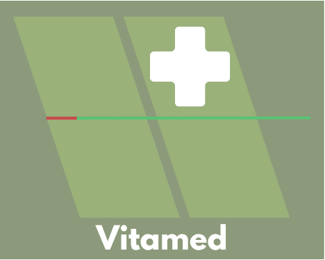

Clínica Vitamed
A Clínica de Saúde Vitamed oferece atendimento humanizado e moderno, com foco na prevenção e bem-estar dos pacientes. Conta com profissionais qualificados e estrutura completa para cuidar da sua saúde em todas as fases da vida.

A Clínica de Saúde Vitamed oferece atendimento humanizado e moderno, com foco na prevenção e bem-estar dos pacientes. Conta com profissionais qualificados e estrutura completa para cuidar da sua saúde em todas as fases da vida.